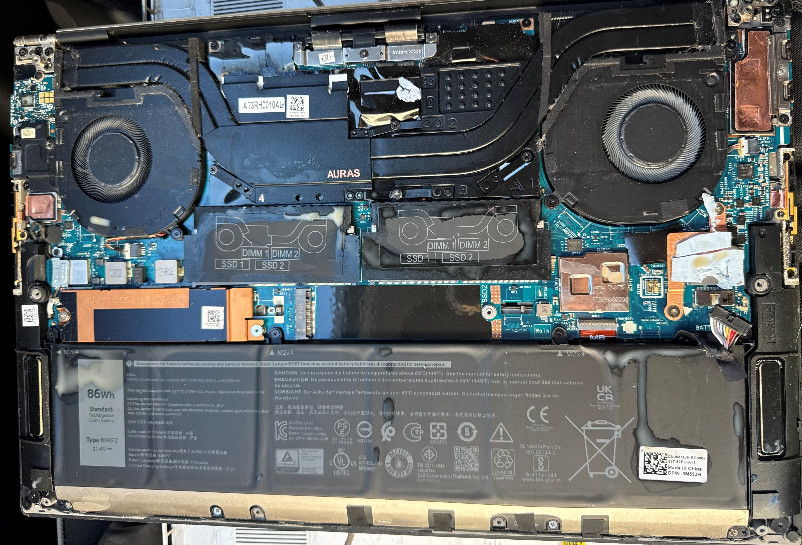
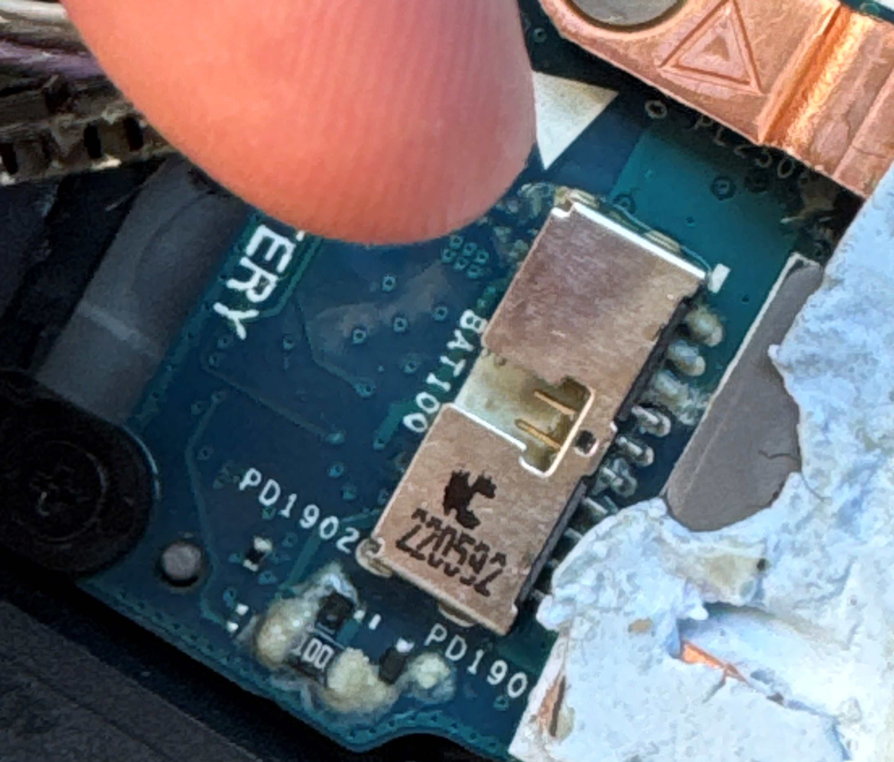
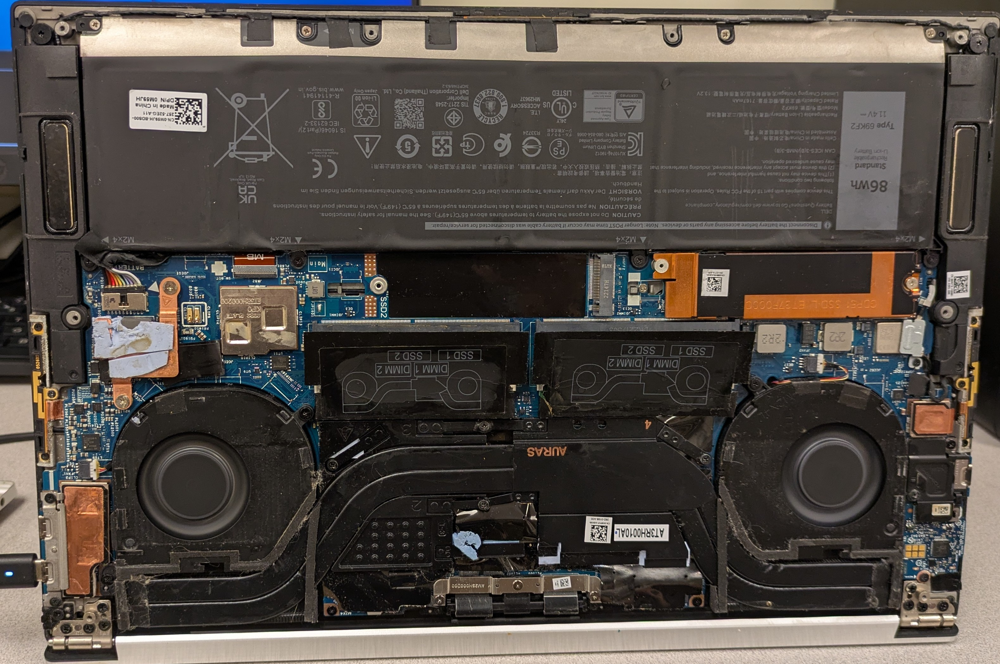
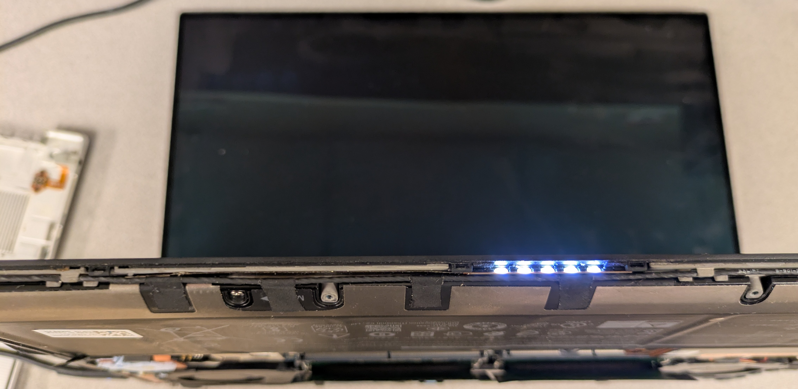
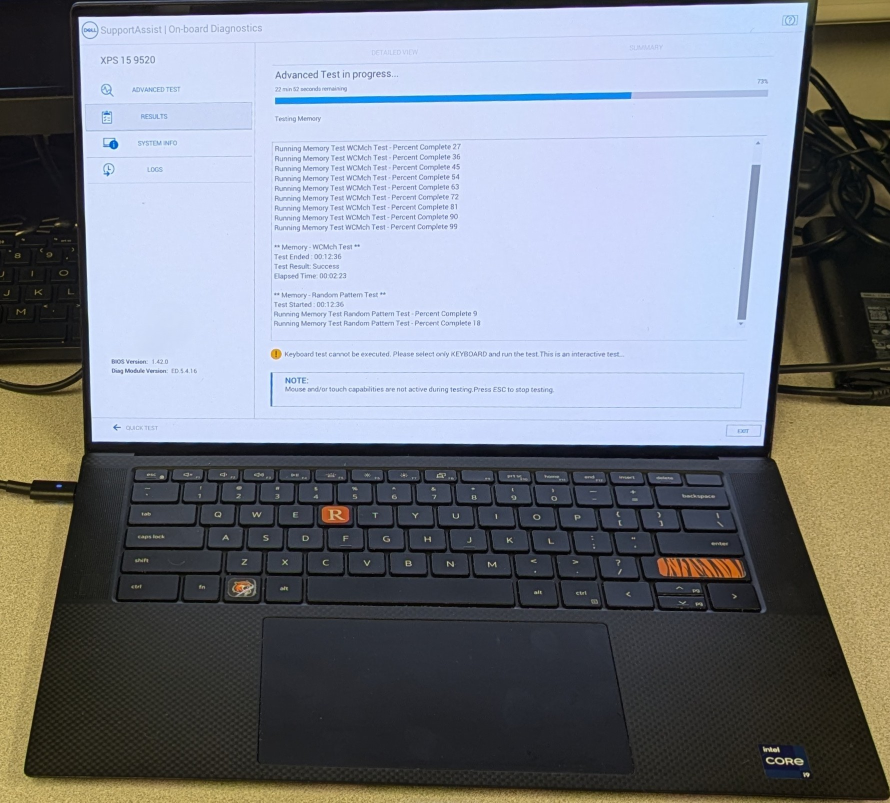

Sometimes, a little patience and technical know-how can make all the difference.
As part of an MCC ICT Club computer and electronics repair workshop, students had an opportunity to put their technical knowledge to work helping troubleshoot and repair equipment.
One particularly rewarding success involved a student whose laptop had suffered what initially appeared to be catastrophic damage from a coffee spill.
The student had accidentally spilled coffee on her four year-old Dell XPS laptop. She quickly wiped away the coffee and dried the laptop as best she could. Hoping it had escaped serious damage, she tried to power it on, but the laptop would not start,
Concerned about the damage, she took it to a big-box electronics retailer for an assessment. Their assessment was discouraging: the motherboard was likely fried, and they recommended purchasing a new laptop.
Not in a position to replace an expensive computer, she asked if there might be another option. She was referred to a local computer repair shop, but their initial diagnostic fee was $100 just to examine the machine.
The shop suggested taking the laptop apart and allowing it to dry overnight, perhaps with the assistance of a fan. She followed their advice, but when she tried powering it up the next day, nothing happened.
A Little Investigation Goes a Long Way
The situation eventually led to a conversation with Professor Link, who had been promoting the ICT Club's computer and electronics repair activities. After learning about the student's laptop, the two took a closer look at it.
Opening the laptop revealed visible coffee residue around the motherboard, battery connections, and other connectors. Rather than assume the motherboard was beyond repair, they decided to try clean it.

Using 90% isopropyl alcohol, cotton swabs,a toothbrush, and compressed air, they carefully worked to clean the affected areas and remove any residue. It was a slow, methodical process, taking care around the delicate components and connections.

After approximately 30 minutes of cleaning, it was time to see if our efforts had made a difference.

Bringing the Laptop Back to Life
The first attempt was encouraging. Instead of remaining completely unresponsive, the laptop began showing signs of life. LEDs started flashing, something it hadn't done since the spill.

Gradually, the machine progressed far enough to reach its built-in hardware self-test menu. The diagnostics ran and no major failures were reported.

The next step was even better: the student was able to log in, and the laptop was working again!
There were still a couple of minor issues, including a sticky Control key and an intermittent USB connection, but the computer was functional and usable. Considering where things started, that was a tremendous improvement.
The student was understandably thrilled. What initially looked like an expensive loss had turned into a successful repair and a laptop that could continue serving her needs.
Don't Give Up on Your Equipment!
This repair is a great example of what the MCC ICT Club's computer and electronics repair workshop is all about: sharing knowledge, developing practical troubleshooting skills, and helping others solve real-world technology problems.
Not every damaged computer or electronic device can be repaired, and sometimes replacement really is the best option. However, a diagnosis isn't always the end of the story. Before giving up on a piece of equipment, it may be worth exploring other possibilities.
Have a computer or electronic device that isn't working? If you're an MCC student facing a similar situation, consider reaching out to an ICT Club member. You might be surprised by what a little troubleshooting and some hands-on experience can accomplish.
Technology can be expensive, but repair doesn't always have to be. Sometimes the best upgrade isn't a new computer. It's learning how to fix the one you already have!